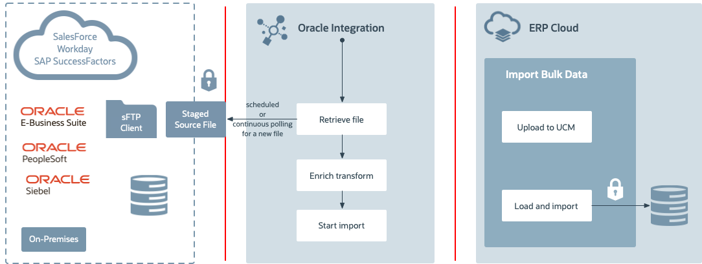

Background
This use case uses Oracle Integration (OIC) and ERP Cloud Import Bulk Data services with File-based Data Integration (FBDI) compliant files. The goal is to import ERP data such as account payable invoices using processes in ERP Cloud.
The typical flow for this use case is:
- The user uploads an FBDI-based account payable invoice file to an FTP server.
- Oracle Integration imports the account payable invoice file to the ERP Cloud.
This lab will explore the ERP adapter and Visual Builder Cloud Service features, and show you how to perform the following tasks:
- Read files from an sFTP server.
- Synchronize account payable invoices to the ERP Cloud.
The following diagram shows the interaction between the systems involved in this use case:

Before You Begin
Some steps in this tutorial have a  icon next to them. Click this icon to copy the snippet of text to your clipboard and then paste where needed.
icon next to them. Click this icon to copy the snippet of text to your clipboard and then paste where needed.
Your instructor will provide you the information you need to access the environments used in this lab.
Prerequisites
For this lab you need the following applications and assets:
- Oracle Integration
- ERP Cloud R13+
- An FTP server
- The file
apinvoiceimport.zip
For your convenience we created and configured the following connections:
- ERP adapter:
ERP Conn_<<zjie>> - FTP adapter:
FTP Conn
Get Your OIC Environment
Select your OIC environment and enter your user number to get the information to access Oracle Integration.
OIC Environment:
- OIC URL:
- OIC User Name:
- OIC Password: will be provided during the training session.
Get Your ERP Cloud Environment
Select your ERP environment to get the information to access Oracle ERP Cloud.
ERP Cloud Purchasing Environment:
- ERP Cloud URL:
- ERP Cloud User Name:
- ERP Password: will be provided during the training session.
FTP Environment
Select your FTP Environment to get the information to access the FTP server:
FTP Environment:
- FTP URL:
- FTP User Name:
- Password: will be provided during the training session.
Sign In
Access to Oracle Integration is secured through Oracle Identity Cloud Service. Users may be granted access to all the Oracle Integration environments in a cloud tenancy, or they may be restricted to specific environments. They may be assigned different roles in each environment.
Open a browser to the OIC URL.
OIC URL:
Enter your OIC User Name.
OIC User Name:
Enter your OIC Password provided by your lab facilitator and click Sign In.
The Welcome page appears. Check out the tour, videos, and links to learn more. Keep scrolling to find more useful links.
Click Home.
The Home page displays an overview with the current state of your instance. You can drill down to get information about available Processes, Integrations, and Visual Applications.

You are now logged in and ready to use Oracle Integration.
Create the FBDI File
Go to the
ERP Lab Artifactsfolder and open the fileGSEPayablesStandardInvoiceImportTemplate.xlsmwith a spreadsheet application.Before editing this file, you might want to create a duplicate for your reference.
Notice that this file contains macros and you might get a security warning. Select the option to enable the content.
Open the AP_INVOICES_INTERFACE sheet and update the following fields with unique random numbers:
- Invoice ID
- Invoice Number
For example, you can use your user number concatenated with the current date.
Enter the data in each cell, don't copy paste. This is to preserve the data type of each column. If you change the data type, this lab will fail.
Save the file.
You might get a warning message about the macros used in this spreadsheet. Accept the message.
- Open the AP_INVOICE_LINE_INTERFACE sheet.
- Enter the same invoice IDs that you used in the AP_INVOICES_INTERFACE sheet.
- Save the file.
Note: For the purpose of this lab we won't change the values for the Business Unit, Supplier Name, Supplier Number, and Supplier Site fields in the AP_INVOICES_INTERFACE sheet. If you want to change them in the future, makse sure that the values you provide match the values in the ERP instance.
Create the integration
- On the Oracle Integration Home page, click Integrations.
- On the Integrations page, click Create.
- Select Scheduled Orchestration.
Enter the following values:
- Name:
Invoice Bulk Import to ERP - Identifier: leave the default value.
The default value is the name of the integration in upper case.
- Version: leave the default value (01.00.0000).
To change this value enter a version number in the format ##.##.####
- Description:
This integration demonstrates the use of OIC’s ERP Cloud Adapter with the FTP adapter to retrieve an AP Invoices file, import it to the ERP Cloud, and receive a call back from the ERP Cloud. - Package: leave blank.
- Name:
Click Create.
The Integration canvass appears.
Get the File from an FTP server
- Hover over the outgoing arrow for Schedule and click
 .
. - Select the FTP connection (FTP Conn).
- In the Oracle Adapter Endpoint Configuration Wizard name your endpoint
ReadAPInvoicesFileFromFTP. In the What does this endpoint do? field, enter:
Retrieves the AP Invoices that comply with FBDI from an FTP location.
- Click Next.
- From the Operation list, select Read a File.
- From the Transfer Mode options, select ASCII.
Enter the following values
- Input Directory:
/upload/public_ftp//in - File Name:
apinvoiceimport.zip Do you want to specify the structure for the contents of the file: select No.
Note: verify that the input directory exists (The FTP information is provided as a text file). If it doesn't exist, create a folder named after your student ID in the folder
upload/public_ftp/. Then create the subfoldersinandout.- Input Directory:
- Click Next.
Review the Summary page, and click Done.
The FTP endpoint and a Mapping action appear in the Integration canvas.
Delete the Mapping action.
This action isn't needed because we aren't passing parameters from the Schedule action and the downloadInvoiceZIP action.
Upload the File to ERP Cloud
- Hover over the outgoing arrow for ReadAPInvoicesFileFromFTP and click .
- Type
ERP Connin the Search field, and select ERP Conn_zjie. - Name your action:
ImportAPInvoicestoERPCloud. In the What does this endpoint do? field, enter:
Uploads files to UCM in ERP Cloud.- Click Next.
- On the Actions page, select Import Bulk Data into Oracle ERP Cloud.
- Click Next.
- On the Operations page, select Import Payables Invoices.
- Click Next.
On the Response page, select the following options:
- From the Notification Mode list, select Email & Bell Notification.
- From the Occurrence list, select Send in any case.
This configures how the ERP console shows the status of the process. For your convenience, you can configure these values from the adapter without having to open the ERP Console.
- Click Next.
Review the Summary page, and click Done.
The endpoint you just created appears on the canvas followed by a mapping action.
- Click Save to save your integration.
Define the Data Mapping
- Click the action Map to ImportAPInvoicestoERPCloud and click
 .
. In the Sources section expand ICSFile.
In the Sources and Target sections expand ICSFile.
Drag the FileReference element in the Sources section, and drop it on the element of the same name in the Target section.
In the Sources and Target sections expand Properties.
Drag the following elements from the Sources and drop them on the element of the same name in the Target section:
- directory
- filename
- Click Validate.
- Click Close.
- Click Save to save the integration.
Define the Tracking Fields
In the Integration canvas, click the error icon next to the Last Saved field.
The icon shows the number of errors you need to fix in your integration. You should have one error. To fix this error you need to add business tracking identifiers.
On the Integration canvas, click
 , and then select Tracking.
, and then select Tracking.
- In the Source section, expand the schedule element.
-
In the Source section, select startTime, and then click
 :
:The selected field appears in the Tracking Fields table and is marked as Primary.
This defines how to identify your instances in the Monitoring console.
Click Save.
Notice that now there aren't any errors.
Activate the Integration
On the Integrations page, locate your integration
The name of your integration is
Invoice Bulk Import to ERP.- Click
 .
. Select Contribute integration mappings to Oracle Recommends.
This option sends your mappings to the recommendations engine which uses this information to suggest you mappings for similar integrations.
Select Enable Tracing and Include Payload.
Typically these options are disabled in production environments, but we'll enable them for the purpose of this lab.
Click Activate.
The activation will complete in a few seconds. If the activation succeeds a confirmation message appears at the top of the page.
Run the Integration
Click How to run, then click Submit Now twice.
A confirmation message with a link to track instance appears.
Click the link to track the instance.
The Track Instances page appears. The integration state should be Processing or Successful.
The importing of the invoices to the ERP Cloud might take a few minutes.
Verify the Bulk Import
Wait 5 minutes before performing this procedure.
Log in to the ERP Cloud Service using these values:
- URL:
https://your_host/homePage/faces/AtkHomePageWelcome - User name:
bala.gupta - Password: use the credentials listed in the file
ERPIntegrationWorkshopEnv.txt
Notice that the scheduled processes are specific to user. To check scheduled process, log in with the same user that you used to create ERP connection.
- URL:
- Click Payables.
- Click Invoices.
- Click
 in the Details panel located under the User menu.
in the Details panel located under the User menu. - Enter the invoice number and click Search.
The invoice should appear in the search results.